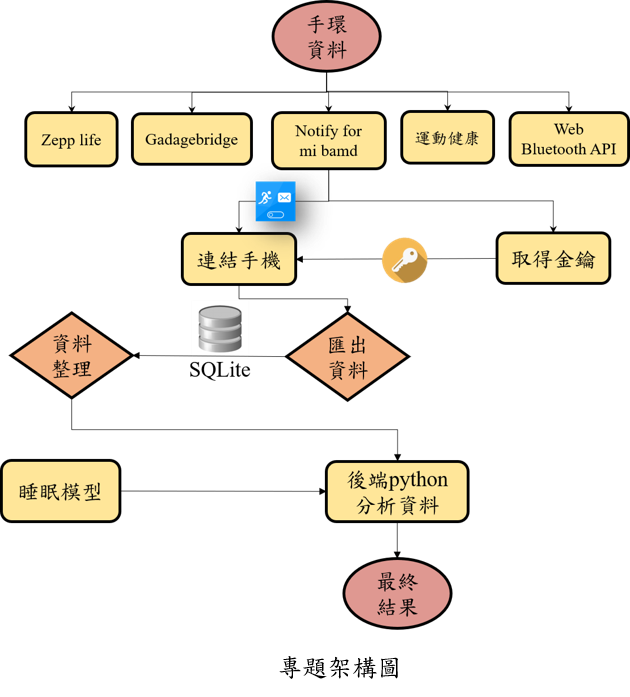
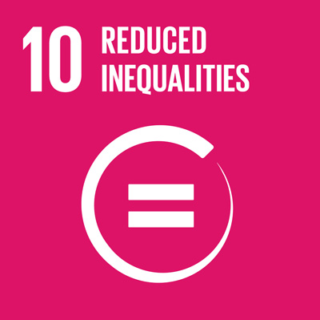

我們是國立中央大學的跨領域AI睡眠儀表板開發團隊，本團
隊鑑於疫情時代下，固有生活模式及環境皆產生變化，台灣
民眾的失眠問題隨之加劇，因此期望透過穿戴裝置擷取使用
者心率資料，上傳至本團隊所建置的此網站，以後端AI模型
分析技術輸出睡眠報告給使用者，讓使用者了解自身睡眠狀
況並加以調整，藉此改善台灣失眠嚴重之問題。

藉由本網站之睡眠儀表板，可將睡眠分析結果做視覺化處理，使資訊
傳達較為清楚，同時也可將本團隊研究成果推廣至網路，免費開放給
傳達較為清楚，同時也可將本團隊研究成果推廣至網路，免費開放給
民眾透過第三方網站了解自身睡眠品質，呼應聯合國2030永續發展目
標之三項指標，發揮社會價值。
SDG3健康與福祉 SDG9產業、創新和基礎設施 SDG10減少不平等


